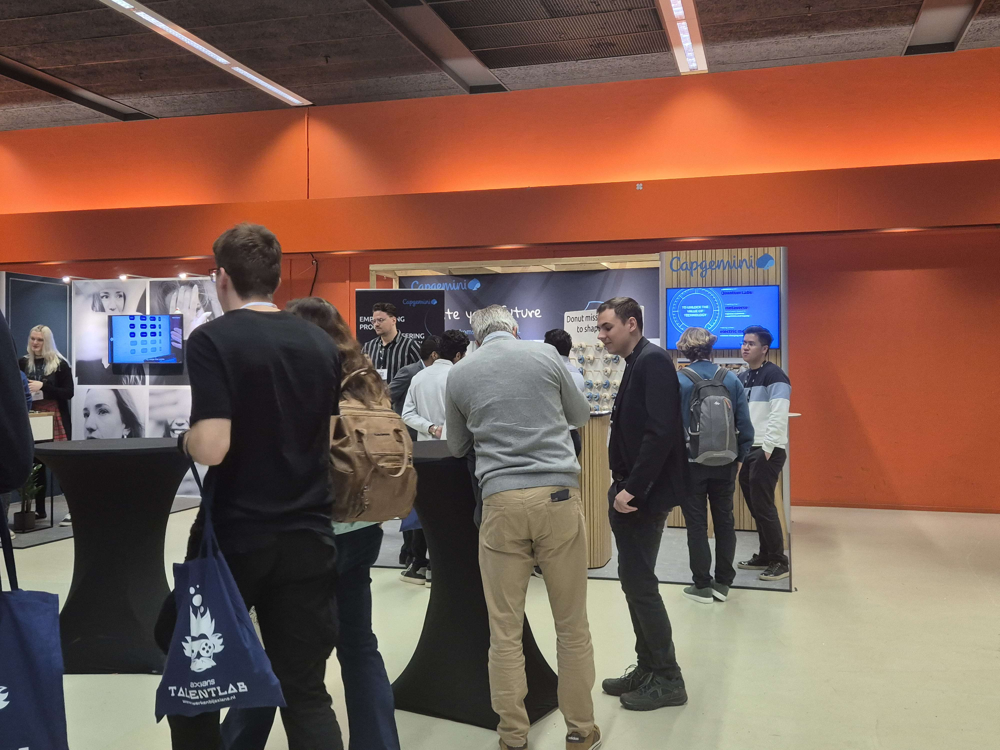
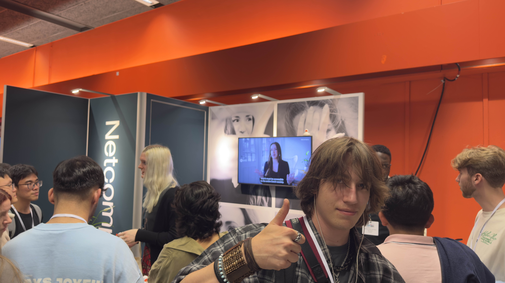
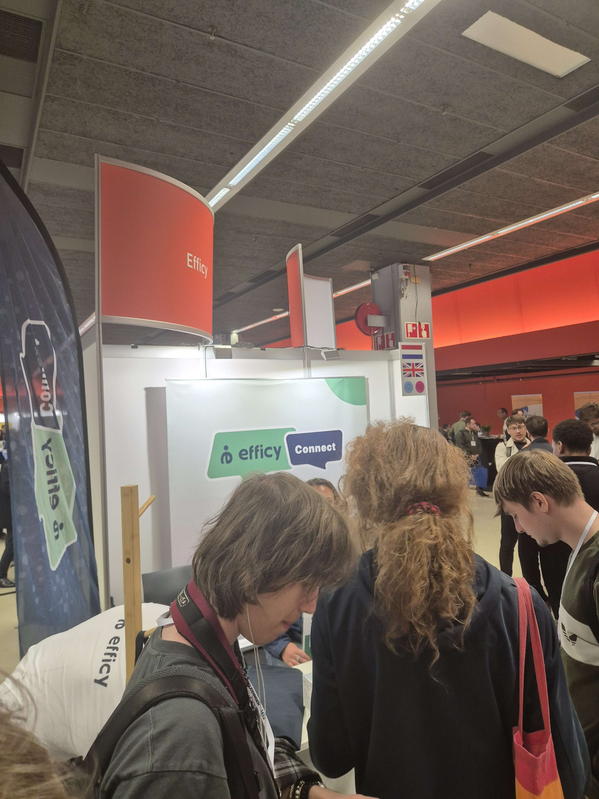

Event - Job-Event
Masterclass Politie

In het begin van het Job-Event ben ik als eerst langs geweest bij een MasterClass van de politie. Er werd uitgelegd wat voor soort werkzaamheden bij de politie gedaan worden door de ICT-afdeling.
Ik vond het zelf erg interessant en heb een foto gemaakt van de QR-scanner voor de vacatures.
Bedrijven die ik leuk vind
Capgemini
Dit was het eerste bedrijf waar ik mee in gesprek ben gegaan. Ik heb hier vorig jaar stage gelopen.
Netcompany
Netcompany richt zich vooral op IT-consultancy en digitale oplossingen voor grote organisaties.
BetaBit

BetaBit werkt veel met Azure en heeft een jonge en groeiende werkomgeving.
Quintor

Quintor leek veel op Capgemini en had interessante opdrachten.
Bedrijven die minder leuk zijn
Swisscom

Swisscom richt zich op telecommunicatie. Het gesprek was informatief, maar sprak mij minder aan.
Efficy
Efficy werkt aan een CRM-platform voor bedrijven.
Werkzaamheden die mij leuk lijken
- IT-consultancy
- Software development
- Cloud engineering (Azure)
- ICT bij de politie
Werkzaamheden die mij minder leuk lijken
- Routinematig supportwerk
- Weinig technische diepgang
Netwerkresultaten
Ik heb gesprekken gevoerd met meerdere bedrijven en mij ingeschreven voor de stagemarkt van Capgemini.
Algemene indruk
Het job event gaf mij een goed beeld van de mogelijkheden binnen de ICT en bevestigde mijn interesse.